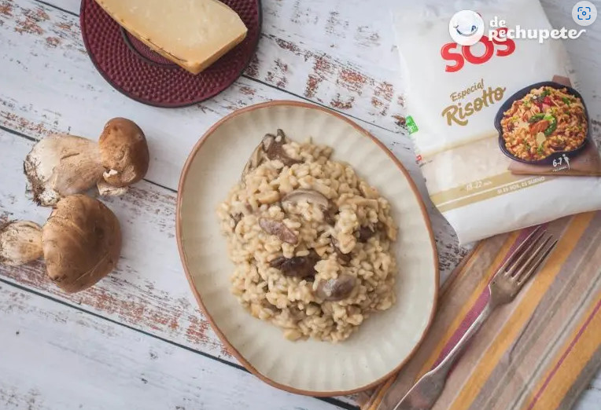

Boletus Risotto

Ingredients:
- 320g. SOS Special Risotto rice
- 400 g. of Boletus Edulis mushrooms
- 80g. Grana Padano PDO cheese
- 60g. of butter
- 100g. spring onion
- 1.3l. vegetable broth
- Salt and freshly ground black pepper (to taste of each house)
- 2 tablespoons of extra virgin olive oil
Steps:
Long story to put right now here! See this link